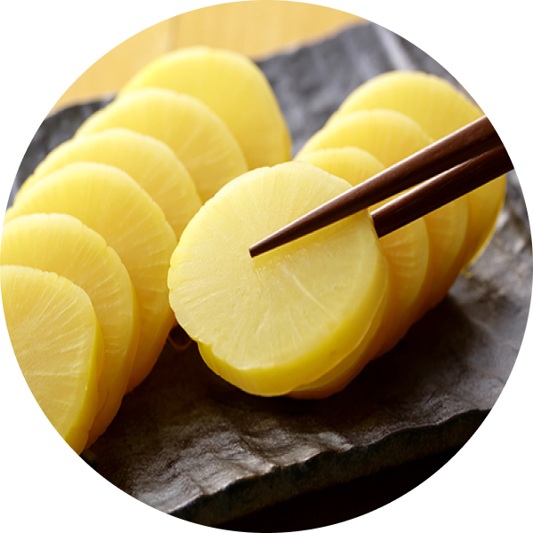

澤庵醃蘿蔔
「漬物」就是中文的醃菜、鹹菜、醬菜，在日本是幾乎每餐都會出現在餐桌上的副食之一。在日本，最普遍的漬物大概就是「澤庵」，即醃蘿蔔。澤庵是江戶時代的僧侶，曾任經都禪宗寺院大德寺住持，民間傳說這種用米糠、鹽水醃成的醬菜製法是他發明的，因此命名為「澤庵」。實際上，澤庵是從「貯漬」的日文發音演變而來，之後才冠上澤庵這個名字。澤庵漬的黃色在一般人的印象當中是添加色素的結果，實際上是蘿蔔在醃漬過程中產生化學作用導致成品是濃黃色或淡黃色。